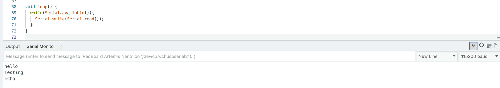
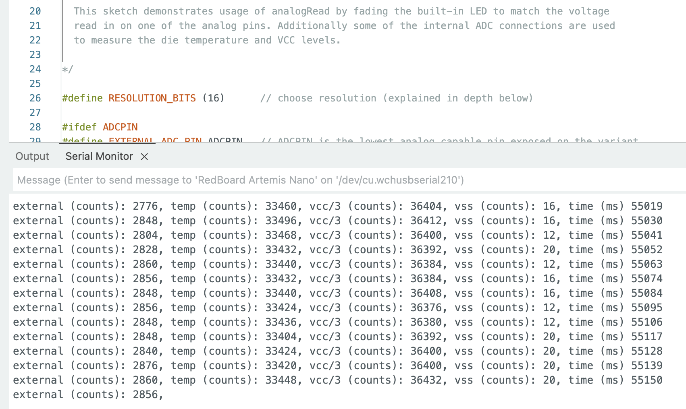

Lab 1: The Artemis Board and Bluetooth
ECE4160 Fast Robotics — Spring 2026
Connor Lynaugh
Table of Contents
Overview
This lab was the first setup stage for the Sparkfun Artemis. This included programming the SparkFun RedBoard Artemis Nano in the Arduino IDE and then building a reliable BLE “debug channel” between the Artemis and my laptop using the provided Python/Jupyter framework. By the end of the lab I could run basic board examples, send structured commands from Python to the Artemis, and stream timestamped and temperature-tagged data back over BLE in a format that is easy to parse.
Lab 1A
Prelab 1A
I installed the Arduino IDE and added the SparkFun Apollo3 board package so the IDE could recognize the RedBoard Artemis Nano. On macOS I initially ran into a bootloader/serial upload issue, which ended up being a driver problem. After updating the CH340 driver and confirming the correct board and port selection, uploads and serial output worked consistently. From that point onward I kept my serial baud rate aligned with the examples and verified each step using serial monitor output and simple visible behaviors (like the onboard LED).
Blink
I started with the standard Blink example to confirm that the toolchain was actually programming the board and that I could control the onboard LED. This was my “sanity check” before moving on to sensor and communication examples.
The youtube reel displays this properly flashing the onboard LED.
Serial
Next I ran SparkFun’s serial example to verify two-way USB serial communication. The key detail for my setup was using 115200 baud so the monitor output was readable and input echo behavior matched expectations. Once this was working, it became my main debugging tool while I iterated on BLE in Lab 1B.
Temperature
I then tested the ADC-based temperature reading example. The goal here was not absolute accuracy but verifying that the board could sample a real sensor and that readings changed with a physical stimulus. Touching the chip and waiting a moment produced a noticeable increase in measured temperature, which confirmed the sensor was behaving as expected.
Microphone
Finally I ran the Pulse Density Modulation (PDM) microphone output example to confirm microphone sampling and frequency content extraction. When I spoke or whistled near the board, the dominant frequency content shifted upward. This also gave me confidence that higher-rate streaming data would be feasible later in the course.
This youtube reel displays this how the frequency content changes while speaking.
Lab 1B
Prelab 1B
For BLE, I set up a dedicated Python virtual environment and ran the course Jupyter notebook workflow. It is organized such that Python writes a command string to a writable RX characteristic, the Artemis parses it and responds by updating a TX string.
In my Arduino sketch, I changed the custom service UUID. On the Python side, the controller loads the MAC address and UUIDs from connections.yaml.

I also generated a unique BLE service UUID to avoid accidentally connecting to a nearby board advertising the default UUID.
The generated UUID: "772587a5-ad3b-4905-a21a-ee5d1d3ee220"
Lab Tasks
1. Echo
I implemented ECHO by reading a string argument from the command payload, then sending back an augmented response through the notify TX string characteristic. In my implementation I used the provided EString helper so I could safely build a C-string without manual buffer management.

Here the arduino added "Robot says ->" and ":)".

2. Send Three Floats
For SEND_THREE_FLOATS, I extended the parsing pattern used in the course’s two-integer example. The Artemis uses RobotCommand.get_next_value() to extract three float values in sequence and then prints them to the serial monitor for verification.

Here I send 6.0 7.0 and 8.0 and the respective results are shown below.


3. Get Time Millis
I added GET_TIME_MILLIS to return a timestamp formatted as T:<millis> I intentionally kept the payload short and easy to parse on the Python side.

This yielded the proper response show in Jupyter.

4. Notification Handler
On the Python side I used a notification callback in ble.py to asynchronously receive TX string updates. I simply splice the passed string and add the time values to a growing array.

I later updated this to include temperature data and possibly more iterable data in the future. For temperature packets, my Arduino sends strings formatted as T:<ms> F:<degF>, so the handler splits at the first space and stores time and temperature into separate lists.

5. TIME_LOOP
TIME_LOOP repeatedly publishes timestamps for 5 seconds using BLE notifications. I used the number of notifications received over that window to estimate the maximum sustained message rate. My measured rate was 24 messages/sec.


6. SEND_TIME_DATA
In SEND_TIME_DATA, I switched from measure and transmit immediately to measure locally, then transmit. The Artemis stores timestamps into a fixed-size global array (length 500), then transmits the buffered samples back to the laptop. This pattern is useful when you want sampling to be less coupled to BLE latency.


7. GET_TEMP_READINGS
Finally, GET_TEMP_READINGS records paired samples of time and temperature into two aligned arrays. Each index corresponds to a single measurement instant. After the capture window, the Artemis sends strings back in the format T:<ms> F:<degF>, which the Python handler parses into times and temps lists.


8. Discussion: incremental vs buffered sampling
The “incremental” approach (requesting GET_TIME_MILLIS repeatedly) is simple and gives immediate feedback, which is helpful while debugging. The downside is that BLE round-trip time dominates the sampling interval, so the effective sampling rate is relatively low. This is not ture on the flipside where all measurements are done upfront.
The buffered approach (recording arrays locally, then sending the array) seperates sampling speed from BLE latency. Sampling in a tight loop on the Artemis can be much faster and more consistent, but it costs RAM and delays feedback until the array is sent. In my implementation, arrays are fixed-size (500 samples), which keeps memory use predictable.
For memory bounds: the Artemis has 384 kB RAM (~393,216 bytes). A timestamp-only buffer using 4-byte integers can store roughly 393,216 / 4 ≈ 98,304 samples. If I store both timestamp (4 bytes) and temperature float (4 bytes), the per-sample storage is ~8 bytes, so the upper bound is about 49,152 paired samples (ignoring overhead from other variables and stack usage).
Reflection
The biggest lesson from this lab was that “communications working” is not simple. Getting a connection is one problem but getting reliable, parseable data at a useful rate is another. Most of my time went into small integration details (drivers, baud rate, matching UUIDs, and making sure my Bluetooth was actually enabled). Once the pipeline was stable, the command-based architecture (RX command string + TX notify string) made it straightforward to add new commands for future labs.
Acknowledgements
Thank you to the course staff for help during setup and debugging. I also referenced a few prior student pages to understand how to present results clearly (Katarina Duric and Nita Kattimani). The use of ChatGPT was used to leverage html formatting including text, images, and video. AI also did a grammar check on my report since I did not type it up online.